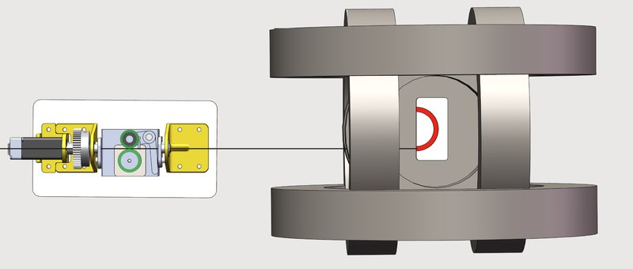

Magnetic navigation · mscrddg_tong2025
Soft magnetic rod
Magnetic soft continuum robot with real-time DDG hard-magnetic rod simulator and inverse-design field control

1 / 2

- Family
- Magnetic navigation (magnetic-navigation)
- Devices
- own MSCR: PDMS + NdFeB particles, rod radius 0.6 mm (1.2 mm OD), length 100 mm, magnetised tip 5 mm, E = 3.0 MPa
- Degrees of freedom
- Helmholtz coil field (3 axes) + stepper advancer
- Push
- Magnetic
- Twist
- Field direction
- Tested up to
- Phantom
- Sim-to-real
- Model-based only — Commands computed in a simulator or from a physical model ran on the robot; nothing was learned.
Testing
- Highest level
- Phantom
- What was tested
- 3D-printed lumen phantoms of varying geometry in Helmholtz coils; counts N.R.
- Key numbers
- remanent magnetisation 0.1448 A m; pulse magnetised at about 4 T; contact-force minimisation compared with passive pushing
Mechanism
- Push (translation)
- magnetic (steering) + stepper-motor advancer
- Twist (rotation)
- field direction
- Device range
- 100 mm rod
- Target anatomy
- generic confined lumens (vascular and GI), 3D-printed lumen phantom
Sensing and interface
- Force sensing
- none (contact force estimated in simulation)
- Leader and haptics
- no
- Imaging
- camera
- Sterility
- N.R.
Size
- Footprint (mm)
- N.R.
- Mass (kg)
- N.R.
Simulation
- Simulation model
- hard-magnetic elastic rod in discrete differential geometry with reduced-order contact (tong2025_realtime, full)
- Sim-trained controller
- model-based: field commands computed from the simulator ran on the hardware (tong2025 Sec. 5); no learned policy
Versions
- Lineage
- arXiv 2503.08864
Sources
- Real-time simulation enabled navigation control of magnetic soft continuum robots in confined lumens · link [tong2025_realtime]
Notes
- Notes
- Best example in this scope of a real-time physics model driving a magnetic wire; not a lone robot.
This record
- Read level
- full — full (abstract, set-up); speed numbers not extracted
- Picture
- tong2025_realtime arXiv 2503.08864 Fig. 5 (advancer, MSCR, Helmholtz coils, lumen phantom) ↗ — licence: arXiv author preprint, licence not checked; grade B
- Picture changes
- native extract (4816 px); 5 labels, Push arrow and 4 leader lines erased (LaMa); background ghosts flattened to the background grey; leader ghosts on the flat-shaded coil face replaced by the column median
- Found by
- actuated-tip: Search of actuated-tip and magnetic devices.
- Data
- JSON · YAML:
records/robots/mscrddg_tong2025.yaml - Correction
- Suggest a correction [repository not created yet]